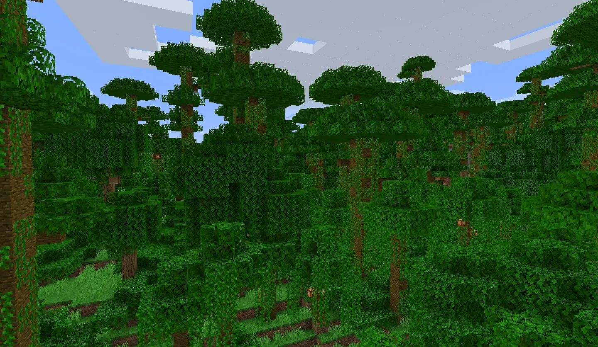
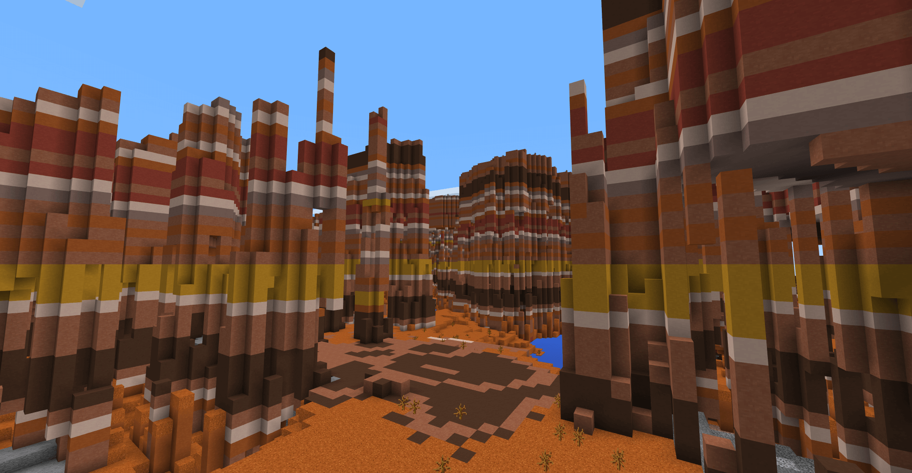
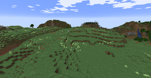
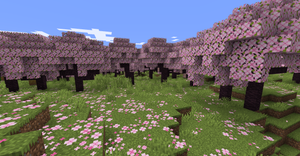
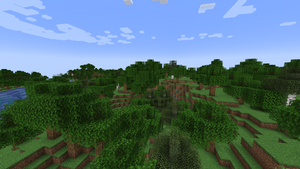
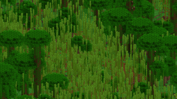
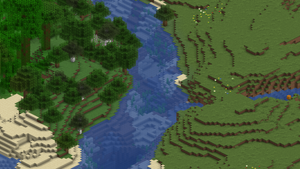

| nom | image | description |
|---|---|---|
| Le désert |  |
Un biome stérile composé principalement de dunes de sable, d'arbustes morts et de cactus. Les seules créatures passives qui apparaissent naturellement dans les déserts sont les lapin. La nuit, des zombies momifiés apparaissent généralement au lieu des zombies normaux. La canne à sucre peut être trouvée si le désert se trouve à côté d'une rivière. Les villages du désert, les puits du désert et les pyramides du désert se trouvent exclusivement dans ce biome. |
| La jungle |  | Il s'agit d'un biome forestier dense. On y trouve des fougères et de grands acajous avec des troncs de 2×2 d'épaisseur pouvant atteindre jusqu'à 31 blocs de haut. Le paysage est d'un vert luxuriant, les feuilles couvrent une grande partie du sol de la forêt - ces "arbres buissons" ont des troncs d'une seule bûche d'acajou, entourée de feuilles de chêne ou d'acajou. Des lianes sont présentes le long de la plupart des blocs et peuvent recouvrir la surface des grottes. Les ocelots, les temples de la jungle, les ruines de sentier, les pastèques, les fèves de cacao, les pandas et les perroquets sont présents dans ce biome. Les melons poussent en parcelles, comme les citrouilles, mais sont communs. |
| Le mesa |  | Un biome peu commun où de grands monticules de terre cuite et de terre cuite colorée se forment. Du sable rouge est généré avec parfois des cactus et des arbustes morts. Ce biome se trouve généralement à côté des déserts et peut être généré sur des terrains montagneux. Le minerai d'or est également plus fréquent ici. La composition de ce biome est utile lorsque les autres sources de terre cuite et d'or se font rares. |
| La prairie |  | La prairie est un biome herbacé qui se trouve sur les plateaux à proximité des chaînes de montagnes. Elle est parsemée de fleurs et d'herbes courtes et hautes vertes turquoises. Toutes les petites fleurs y apparaissent, à l'exception des orchidées bleues, des tulipes, des muguets ou des roses de Wither. Il arrive, rarement qu'un chêne ou un bouleau isolé comportant toujours un nid d'abeilles soit généré. Les avant-postes de pillards et les villages des plaines peuvent tous deux se générer dans ce biome. Les moutons, ânes et lapins sont les seules créatures passives qui apparaissent dans ce biome. |
| Le Bosquet de cerisiers |  | Les bosquets de cerisiers sont des zones herbacées avec de nombreuses herbes courtes et hautes auxquelles s'ajoutent des pétales roses en plus des traditionnels pissenlits et coquelicots. La principale caractéristique environnementale du bosquet de cerisiers est la présence de cerisiers, qui se distinguent par leur couleur rose saisissante. Leurs feuilles laissent tomber des particules de pétales. Les cerisiers peuvent se regrouper assez densément pour créer une couverture de feuilles. Le bosquet de cerisiers est un biome propice à la survie. La rareté des arbres peut aider le joueur à ne pas se perdre tout en collectant une quantité importante de ressources. |
| Forêt |  | Un biome commun avec de nombreux chênes et bouleaux et une quantité suffisante d'herbes courtes, de champignons et de fleurs. Comme dans les taïgas, on y trouve des loups. |
| Jungle de bambous |  | Le terrain de ce biome est couvert d'herbe avec quelques parcelles de podzol. Contrairement à la jungle normale, des buissons apparaissent mais ne couvrent pas le sol. De plus, de grands acajous de 2×2 comme dans la jungle peuvent apparaître, ainsi que de grands chênes ou des chênes "ballon". La densité des arbres dans ce biome est bien moindre que dans une jungle clairsemée, mais des quantités importante de pousses de bambou couvrent ce biome. Les mobs exclusifs à la jungle tels que les ocelots et les perroquets peuvent apparaître dans ce biome, les pandas ont un taux d'apparition encore plus élevé que dans la jungle ordinaire. Les temples de la jungle peuvent également s'y générer. |
| Rivière |  | Un biome composé d'eau formant une courbe allongée, semblable à une vraie rivière. Les rivières traversent le terrain ou séparent les biomes principaux. Elles tentent de rejoindre les océans, mais tournent parfois autour de la même zone océanique. Dans de rares cas, elles peuvent n'avoir aucun raccordement avec un océan, au lieu de former une boucle. L'herbe a un ton aquatique terne, comme l'océan, et on y trouve également quelques chênes qui tendent à s'y former. Les rivières sont également une source solide d'argile. Ces biomes sont propices à la pêche, mais les noyés peuvent y apparaître la nuit. Dans l'édition Bedrock, les créatures autres que les saumons, les poulpes et les noyés ne peuvent pas apparaître dans ce biome, même sous terre, excepté via les générateurs de créatures. |